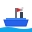

🚢 Vessel Data Logger - Favicon Helper
To create a proper favicon.ico file:
- Visit favicon.io/favicon-converter
- Upload the favicon.svg file from this folder
- Download the generated favicon.ico
- Replace the favicon.svg with favicon.ico in your project
Current SVG preview:

You can delete this file after creating your favicon.ico